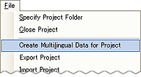
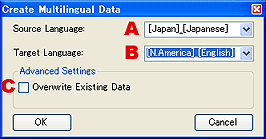
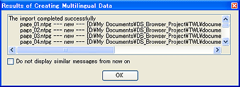
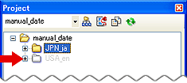
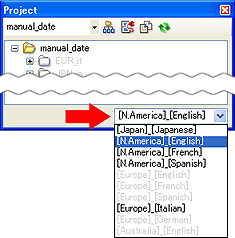

ローカライズ向けに、編集中の言語の内容を複製します。
メインメニューの[ファイル]→[プロジェクトに他言語データを作成]を選択します。

他言語データ編集ダイアログが表示されますので、複製元の言語を選択し、複製先の言語に設定して複製します。
|  |
|
複製後、結果がダイアログ表示されます。
プロジェクトウィンドウに、複製したフォルダが表示されていることで、確認できます。
プロジェクトウィンドウの言語切り替えで、編集する言語を切り替えます。
※その他の言語は編集不可能になります。
必要に応じて独自のリージョンと言語のフォルダを追加できます。
「他言語データを作成」ウィンドウで、複製先の言語の中から「その他言語フォルダを追加」を選択することで、エディタでサポートされていない言語フォルダを作成できます。
「その他言語の新規作成」ダイアログが表示され、指定の形式でフォルダ名を付けるとそのフォルダを新たな言語フォルダとして作成されます。
新たな言語フォルダが作成されると、そのフォルダに複製元の言語を複製できるようになります。
※「その他言語フォルダを追加」で新たな言語フォルダを作成した場合、ビューアの使い方とＵＩを新たに用意してください。
ビューアの使い方とＵＩが用意されていない場合は、エラーが表示されプレビューと説明書のバイナリファイルの作成ができません。
詳しくはビューアの使い方とＵＩの編集をご覧ください。